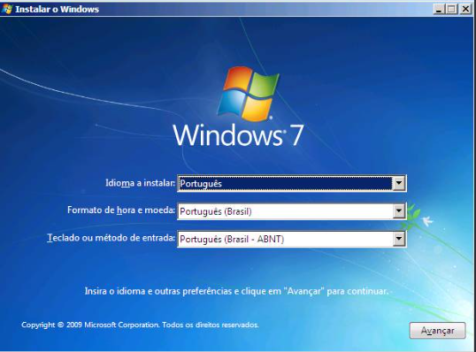
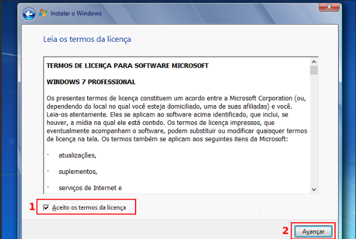
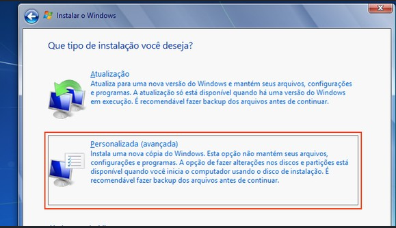
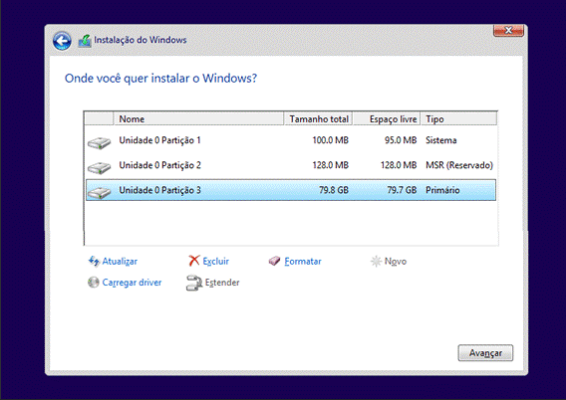
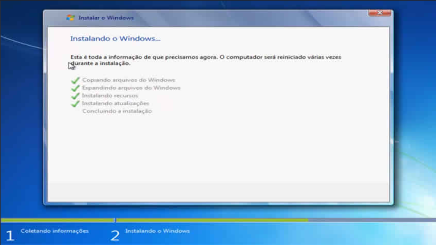
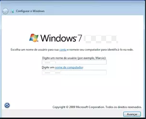

Introdução
O Windows 7 é um sistema operacional desenvolvido pela Microsoft. Neste tutorial, você aprenderá como preparar um pendrive bootável e realizar a instalação do Windows 7 em um computador.
1. O que você precisa antes de começar
Antes de iniciar a instalação, tenha os seguintes itens:
- Um computador compatível com o Windows 7.
- Um pendrive com pelo menos 8 GB de capacidade.
- Uma imagem ISO legítima do Windows 7.
- O programa Rufus para criar o pendrive bootável.
- Uma chave de ativação válida, quando necessária.
- Um backup dos seus arquivos importantes.
2. Baixar o Rufus
O Rufus é um programa utilizado para criar pendrives inicializáveis com arquivos de instalação de sistemas operacionais.
Acesse o site oficial para baixar o programa:
Baixar o Rufus no site oficial

3. Preparar o pendrive bootável
- Conecte o pendrive ao computador.
- Abra o programa Rufus.
- Na opção "Dispositivo", selecione o pendrive correto.
- Clique em "Selecionar".
- Escolha a imagem ISO do Windows 7.
- Confira as configurações selecionadas.
- Clique em "Iniciar".
- Aguarde o término da criação do pendrive.

4. Iniciar o computador pelo pendrive
Depois de criar o pendrive bootável, será necessário iniciar o computador utilizando o pendrive.
- Conecte o pendrive ao computador desligado.
- Ligue o computador.
- Abra o menu de inicialização (Boot Menu).
- Selecione o pendrive USB.
- Pressione Enter para iniciar.
A tecla para abrir o menu de inicialização pode variar de acordo com o fabricante, sendo comum utilizar F12, F9, F11, Esc ou outra tecla.

5. Iniciar a instalação do Windows 7
Após iniciar pelo pendrive, a tela de instalação do Windows 7 será exibida.
- Selecione o idioma de instalação.
- Escolha o formato de hora e moeda.
- Selecione o idioma do teclado.
- Clique em "Avançar".
- Clique em "Instalar agora".

6. Aceitar os termos de licença
Leia os termos de licença apresentados pelo instalador. Para continuar, marque a opção de aceitação e clique em "Avançar".

7. Escolher o tipo de instalação
O instalador poderá apresentar opções de atualização ou instalação personalizada.
Atualização
Tenta manter arquivos, configurações e programas compatíveis. A disponibilidade depende do sistema já instalado.
Personalizada (avançada)
Permite escolher a partição onde o Windows será instalado. Essa opção é normalmente utilizada em uma instalação limpa.

8. Escolher e formatar a partição
- Selecione o disco ou partição desejada.
- Confira o tamanho e as informações exibidas.
- Se necessário, utilize a opção "Formatar".
- Confirme a operação quando solicitado.
- Clique em "Avançar" para continuar.

9. Aguardar a cópia dos arquivos
O instalador começará a copiar os arquivos do Windows 7 para o disco rígido ou SSD.
Durante esse processo, o computador poderá reiniciar automaticamente algumas vezes.
- Não desligue o computador durante a instalação.
- Mantenha o computador conectado à energia.
- Se necessário, remova o pendrive após a primeira reinicialização.

10. Configuração inicial do Windows 7
Após a instalação dos arquivos, o sistema solicitará algumas configurações iniciais.
- Digite um nome para o usuário.
- Defina um nome para o computador.
- Crie uma senha, se desejar.
- Informe a chave de produto, quando solicitada.
- Escolha as configurações de atualização.
- Configure data, hora e fuso horário.
- Selecione o tipo de rede, quando disponível.

11. Instalar os drivers
Depois de concluir a instalação, alguns dispositivos podem não funcionar corretamente até que seus drivers sejam instalados.
Verifique principalmente:
- Driver do chipset.
- Driver de vídeo.
- Driver de áudio.
- Driver de rede.
- Drivers de USB e outros dispositivos.
Sempre que possível, baixe os drivers diretamente do site oficial do fabricante do computador ou do componente.

12. Conclusão
Depois de instalar os drivers e configurar o sistema, o Windows 7 estará pronto para ser utilizado.
Recomendações finais
- Faça uma cópia de segurança dos seus arquivos.
- Use uma ISO legítima do Windows.
- Utilize uma chave de ativação válida.
- Evite baixar programas de sites desconhecidos.
- Considere utilizar um sistema operacional com suporte atualizado.